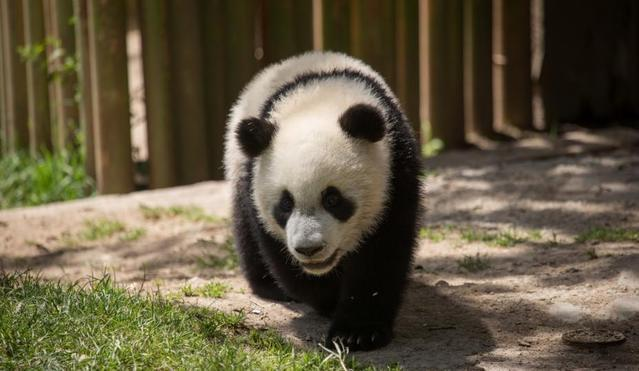
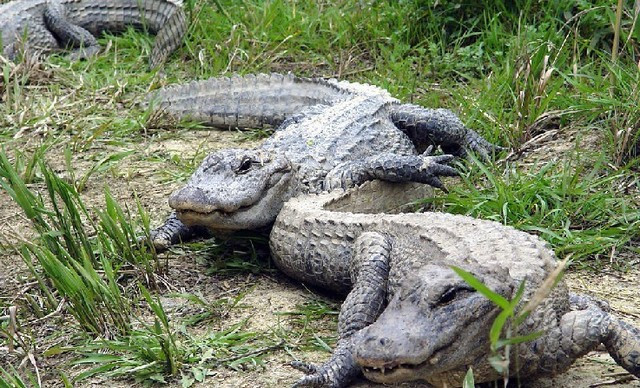
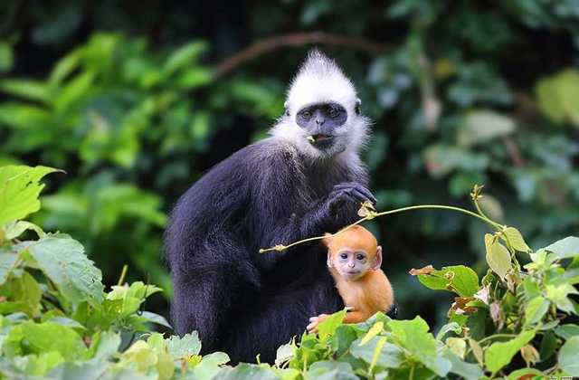
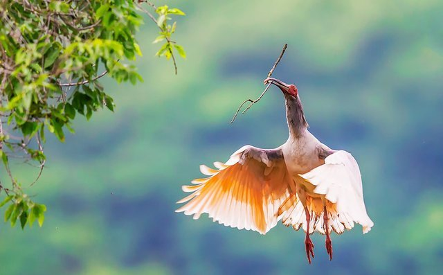

保护动物 从我们做起
救助动物刻不容缓
保护珍稀动物的意义和作用保护珍稀动物可以更好的维持生物的多样性。珍稀动物是全人类共有的宝贵财富。生态系统中物种越丰富,它的创造力就越大。自然界的所有生物都是互相依存,互相制约的。每一种物种的绝迹,都预示着很多物种即将面临死亡。保护生物链条,才能更好的维系生态平衡。许多珍稀动物生物具有重要的科学研究价值。每一个物种都具有独特的作用。这些野生动植物如果绝迹,是人类的重大损失.动物是人类亲密的朋友,尤其是珍稀动物的存在使整个世界变得丰富。
同时，濒危动物是科学研究的试验材料，在动物学、进化学、生态学、遗传学、现代医学、仿生学等学科领域里发挥着重要作用。如我国驯养繁殖的数万只食蟹猴和猕猴，绝大多数都被用作实验动物或用来生产抗病防病的疫苗。科研院所、大专院校、动物园以及博物馆收藏、陈列或展出濒危动物的标本，对科研教学、宣传教育、执法活动等发挥了重要作用。
- 
- 
- 
- 
- 1
- 2
- 3
- 4